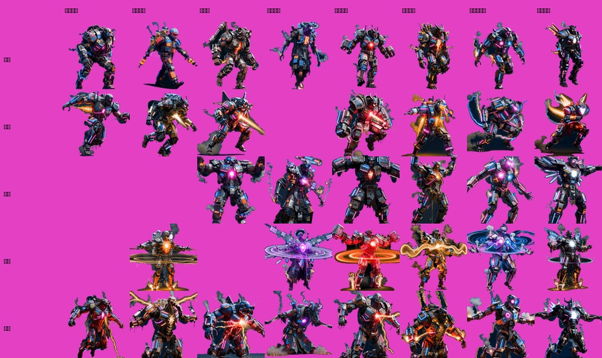
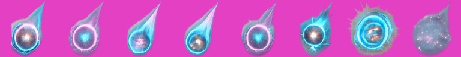
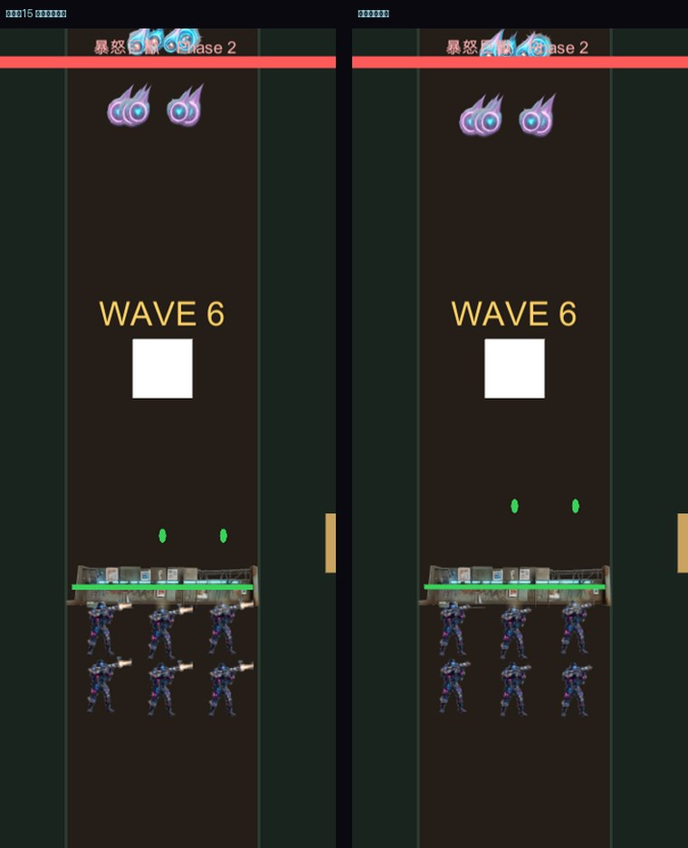

全貌

八隻 × 五種動作。空格是該隻沒有那個技能（技能分配照 BOSS_DEFS，不是每隻都有全部）

彈幕用的 8 顆能量彈粒子：亮核心 + 洋紅／青藍光暈，尾巴朝上（往下飛）

實機：彈幕 15 顆能量彈同時飛下（左）／魔王死亡演出（右）
彈幕改成粒子（使用者指正）
- 原本排了 8 支「魔王揮臂」的整隻動畫，方向是錯的——一支影片只換到「揮了一下手」，而且素材會跟
BOSS_BARRAGE_* 那組參數脫鉤（之後調排數／速度，寫死的動畫不會跟著變）。
- 取消剩下 6 支（省 $1.92），改做一張能量彈素材（$0.40）。
ZlBossBullet 隨機挑一顆並帶隨機大小，十幾顆同時出現才不會像複製貼上。
- 第一版生出金屬飛彈（有外殼與尾翼），重生一次寫死「純能量、無實體外殼」才對。遊戲裡只有 36px，金屬細節讀不出來。
補完漏移植的死亡演出
BOSS_DEATH_SLOWMO_S / _SCALE / _FLASH_S / BOSS_ENTRANCE_SHAKE_S 這四個常數搬過來之後在 Unity 端引用次數一直是 0。現在補上：0.5 秒慢動作、0.5 秒白閃、0.4 秒震動、出場 0.8 秒震動。- 死亡用獨立的
ZlBossCorpse 播，不留在 Zombies 清單裡——留著的話每個走訪該清單的地方都要多一個「死了嗎」判斷，漏一個就會「對屍體開槍」。
- 過波延到演出播完（1.1 秒），不然「WAVE N」橫幅會蓋在死亡動畫上、第 8 波會在魔王倒下前就跳勝利畫面。
驗證（零例外）
- A/B 對照
- 關動畫推進 60.0 / 開動畫推進 60.5 px，差 0.84%（動畫不影響位移）
- 三個階段
- 1 / 2 / 3 全部走到
- 四種模式
- entering / midfield / dashing / lastStand 全部進到
- 攻擊動作
- dash / slam / summon 都播放過
- 彈幕
- 強制觸發後能量彈 15 顆（= 3 排 × 5 發）
- 死亡
- 擊殺後 timeScale=0.20（慢動作生效），演出結束回 1 並過波
花費
- Boss 動畫 35 支 $11.20 ｜ 能量彈 $0.80（含重生一次） ｜ 試樣 $0.64
- 累計美術 $27.20（比原估省下彈幕那 6 支的 $1.92）